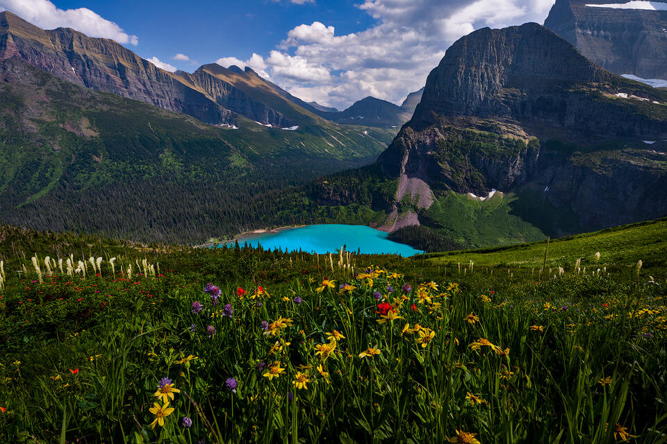

Get your boots on the ground and embark on your next adventure with The Great Beyond, your premier resource for discovering national parks and breathtaking mountains to climb. Whether you’re an experienced mountaineer or a weekend wanderer, we offer detailed trail guides, park insights, and expert tips to help you explore the beauty of nature. Connect with a community of fellow adventurers and unlock the wonders that await you in the great outdoors. Start your journey today and experience the thrill of the wild with The Great Beyond!


Despite standing at 14,691 feet tall (4,478 meters), the Matterhorn is only the 10th tallest mountain in Switzerland. However, that doesn’t stop it from arguably being the most beautiful mountain in the country. This alpine peak spans the border between Switzerland and Italy. It’s best known for its striking pyramid-shaped peak.
One of the best places to view the Matterhorn is in Zermatt, a charming mountain resort sitting in the mountain’s shadow. While most travelers head to the Matterhorn to take in the breathtaking views of its snow-capped peak, others visit the area to take on the mountain. Over 2,000 seasoned climbers ascend the peak every year. It’s approximately an 8 to 10-hour round trip to reach the peak.